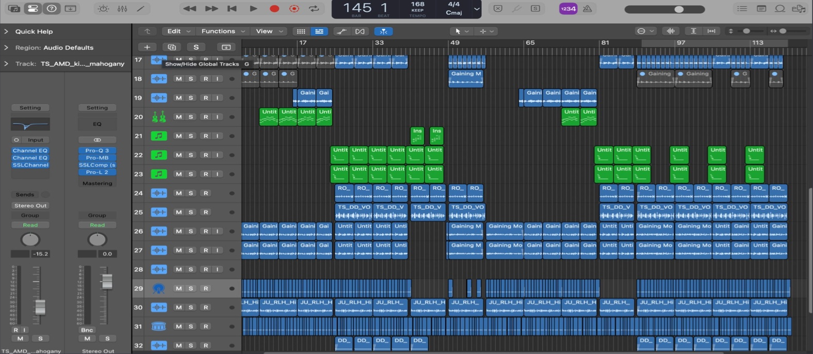

SUBJECT 001 · AAUSHI THAKUR
A perfectly
ordinary
legend.
Composer. Visual storyteller. Technical creator.
My world lives where art meets technology.
Hi, I’m Aaushi Thakur. I bring the structure of music composition and the analytical thinking of technology to audio and visual storytelling. From Photoshop to Python, I turn abstract ideas into work with tangible impact.
Meet the legendA playful field guide. A real creative journey.
CREATIVE ROOTS Photoshop, age 13
MUSIC TOOLKIT Logic Pro
TECHNICAL PROJECT TunePy · Python audio
NORTH STAR Art meets technology
01 / THE ORIGIN STORY
It started with
Photoshop.
Age 13: new realities,
made from existing images.
At thirteen, I discovered Photoshop and the possibility of building entirely new realities from existing images. That fascination with transformation stayed with me.
Music composition gave me another way to shape emotion. I wrote, composed, and sang “Change” and “Bad Storm,” producing both in Logic Pro. In Premiere Pro, I bring that sense of rhythm to visual stories, controlling pacing, sound, and atmosphere.
Audio production also showed me the limits of existing tools. I developed TunePy, a Python-based audio processor using NumPy and PyAudio, to explore customized sound manipulation and analysis. Creative freedom, for me, is connected to technical independence.
My exploration of generative AI and machine learning led to AlphaTrader, a collaborative algorithmic-trading project under the guidance of Prof. Veena Sharma and her team. I also worked as a Data Analyst at Sigma AI, improving conversational-AI data pipelines and drawing insights from large datasets.
Different mediums. One thread: turning ideas into impact.
02 / THE SKILL INVENTORY
Comes with a few special abilities.
Sound, image, code, and data.
All part of the same practice.
-
Visual storytelling
I shape light, colour, pacing, and rhythm in Photoshop and Premiere Pro, including video work for clients and a school in Himachal Pradesh, India.
PHOTOSHOP · PREMIERE PRO -
Music production
I write, compose, sing, and produce. Hear “Change” and “Bad Storm”, both produced in Logic Pro.
SONGWRITING · COMPOSITION · LOGIC PRO -
Creative technology
I developed TunePy for Python-based audio processing, explored generative AI across music, speech, and visual art, and worked on machine learning through AlphaTrader.
PYTHON · AUDIO PROCESSING · ML -
Data & strategy
At Sigma AI, I worked with statistical analysis, data mining, and conversational AI. At BeBeMe, I applied analysis to client management and sales strategy.
DATA ANALYSIS · CLIENT STRATEGY

03 / FROM PRACTICE TO PROJECT
Make the music.
Then make the tools.
TunePy grew out of a real creative need: more control over audio processing. Using Python, NumPy, and PyAudio, I explored how building software could expand what I could do with sound.
Explore TunePy on GitHubAlphaTrader took that technical curiosity into machine learning, data modeling, and a collaborative research project for US equity markets.
Explore AlphaTrader on GitHub